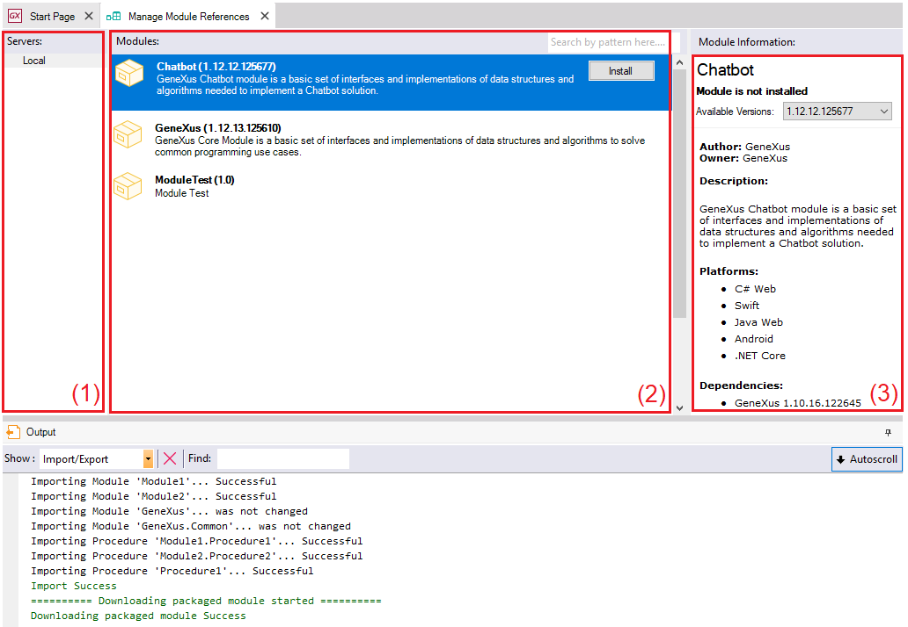

The Manage Module Reference option is another intended (along with Knowledge Manager Import) for knowledge-sharing among developers. You can install a module provided by other developers that have packaged their funcionalities for distribution. The Manage Module Reference dialog allows you to:
 The Install/Update process updates the Output window with relevant process status, warnings, and errors. TroubleshootingSymptom: When Installing, "Object reference not set to an instance of an object"error: Error downloading module 'WebExtensionToolkit' from 'GeneXusMatrix' (internal error: 'Object reference not set to an instance of an object.'). Reason: GeneXus requires Maven 3.6.1 or higher for installing modules from a Nexus Modules Server. TroubleshootingWhen and how is the GeneXus module updated in a KB?
|